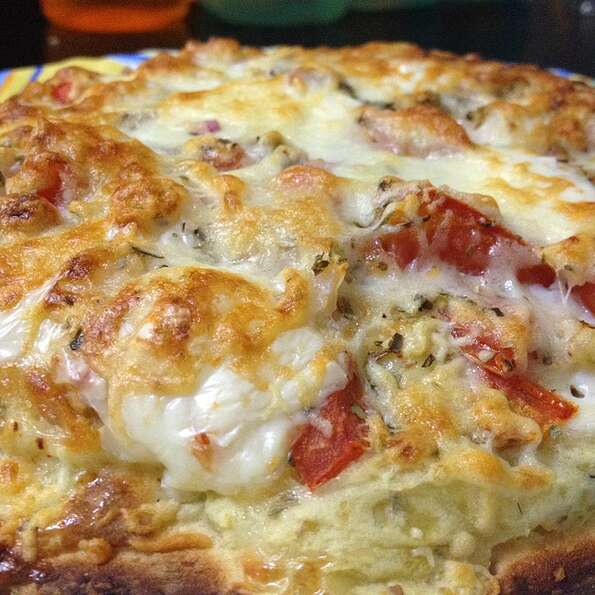

Breakfast Pizza

Description
A delicious pizza to eat when just getting up. Who doesn't like Pizza in the morning?
Ingredients
- 1 (8 ounce) package refrigerated crescent rolls
- 1 cup frozen hash brown potatoes, thawed
- 1 cup shredded mozzarella cheese
- 5 eggs, beaten
- ¼ cup milk
- ½ teaspoon salt
- ½ teaspoon ground black pepper
- 2 tablespoons grated Parmesan cheese
Steps
- Preheat oven to 375 degrees F (190 degrees C). Grease a 10x15-inch baking pan.
- Unroll crescent roll dough and press into the prepared baking pan.
- Sprinkle hash browns and mozzarella cheese over the crescent roll dough.
- Whisk eggs, milk, salt, and black pepper together in a bowl; pour over potato-cheese layer; Top with Parmesan cheese.
- Bake in the preheated oven until eggs are set in the middle and cheeses are melted, about 30 minutes.